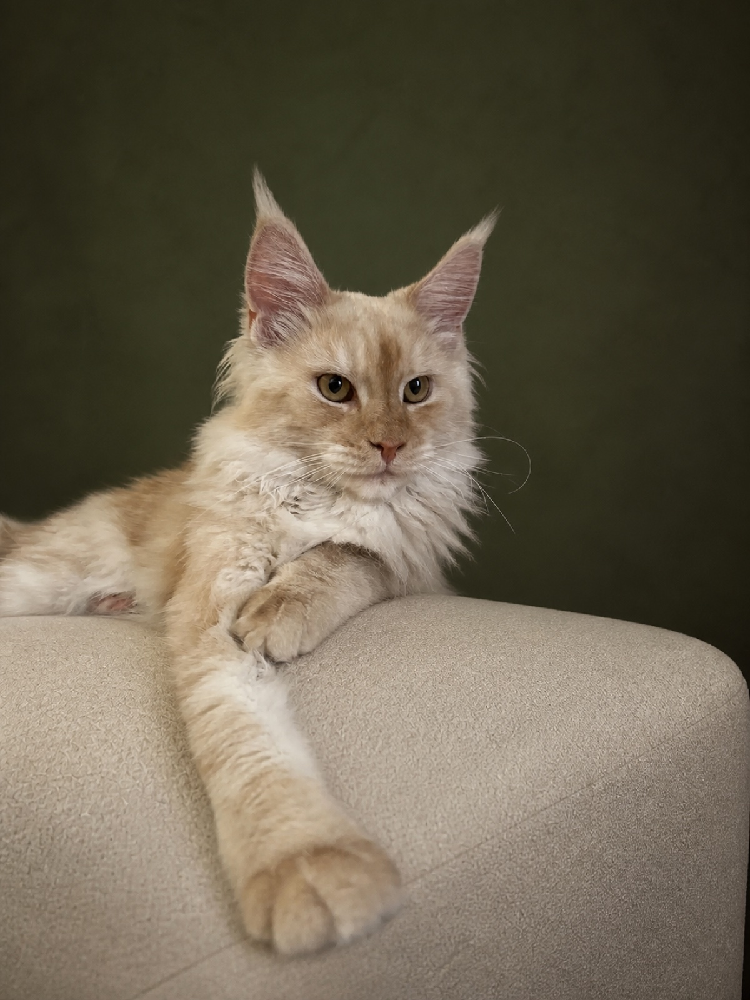
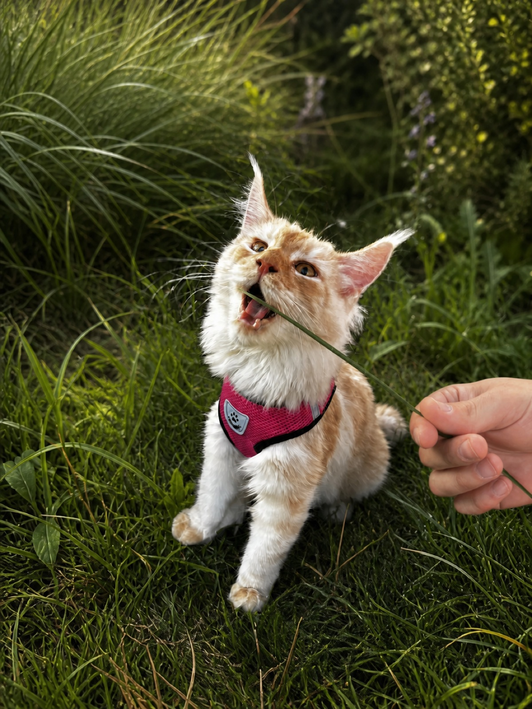
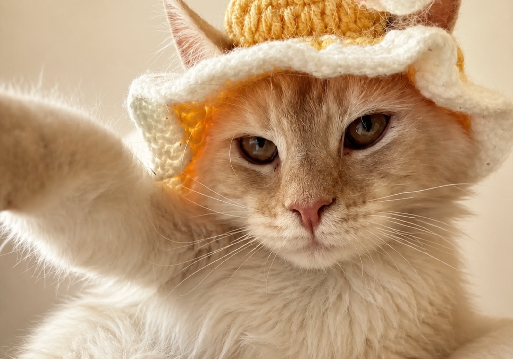
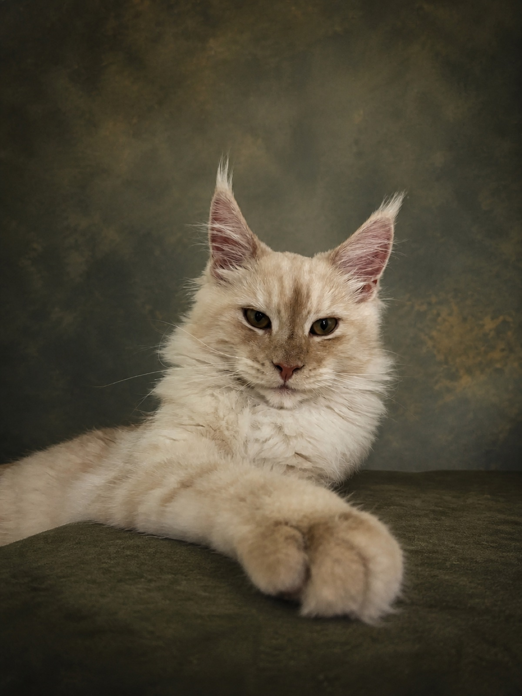

Готовимся спокойно
Привыкаем к осмотру, поездкам и новым звукам — без спешки и лишнего стресса.

Наша первая выставка
Мы с Риччи впервые выходим на выставочный ринг. Эта страница — короткое знакомство с молодой кошкой породы мейн-кун и нашей общей подготовкой к дебюту.
Участница
Риччи родилась 1 февраля 2026 года. Она уже освоила прогулки в шлейке, уютные лежанки и искусство смотреть в камеру так, будто всё давно решено. Теперь впереди новое знакомство — первая выставка.
Профессиональный фотосет



Дебют
Наш первый выставочный день пройдёт на Кубке «Кот-Инфо» в Москве. Будем знакомиться с экспертами, участниками и зрителями — и получать первый опыт на большом ринге.
Привыкаем к осмотру, поездкам и новым звукам — без спешки и лишнего стресса.
Для нас это не гонка за титулами, а первый большой выход и важный общий опыт.
Подходите поздороваться на выставке или напишите заранее — с удовольствием пообщаемся.
Контакты
Напишите мне, если хотите встретиться на выставке, узнать больше о нашей подготовке или просто поговорить о мейн-кунах.